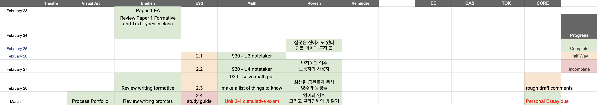
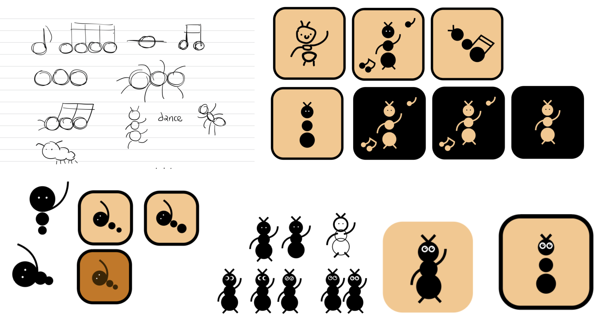
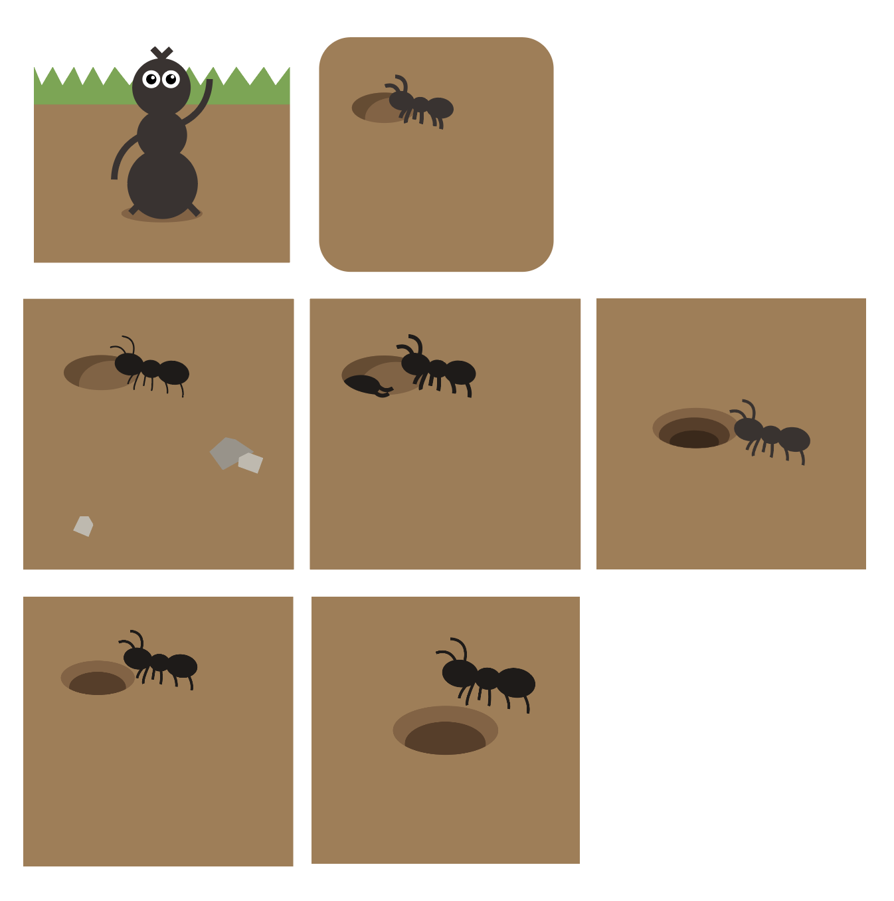

One grid, everything at once
개미는 뚠뚠 started from one small frustration: most planners let you see what's due on a given day, but never let you see everything at once. I wanted the bird's-eye view — every project, every date, in one grid I could scan in a second.
So it's a spreadsheet-style grid at heart: rows are dates, columns are projects, and each cell is a square you paint with color. But a bare grid is a cold tool, and cold tools are a crowded, forgettable category. The real work was giving a sterile utility a warm identity — an ant carrying its work from room to room of its burrow, one project at a time.
Stack — vanilla HTML/CSS/JS in a single file, packaged as a PWA. Firebase for Firestore sync and Google sign-in, localStorage for offline caching. No frameworks. Illustration in Adobe Illustrator.
Two shapes, one blind spot
Before building anything, I lived inside the existing options — spreadsheets, Notion, Google Sheets, Todomate, and a long list of scheduling tools.
They split cleanly into two shapes: calendars and to-do lists. Both share the same blind spot. A calendar shows one day's tasks well, but you can't hold many parallel projects in your head at once. A plain to-do list felt stiff, rigid, joyless. Nothing gave me the wide overview I wanted, or made me want to come back.
Why an ant?
The theme came before the polish, and from two places at once.
The fable
Aesop's “The Ant and the Grasshopper” — the ant who works steadily while the grasshopper plays. The grid I was imagining was, fundamentally, about doing the work day after day, so the steady, unglamorous ant felt like the right face for it.
The song
The 개미송 — the ant song from 짱구는 못말려 (Crayon Shin-chan), about an ant who sweats through each day for the sake of getting by. As a kid it was a silly tune; as a modern Korean adult working through an uncertain world, it lands differently — earnest, a little funny, quietly moving. That tone is exactly what I wanted the app to feel like.
The shape I already trusted
The format isn't new to me. In high school, a graduating senior shared a Google Sheets planner template for the underclassmen — rows as dates, columns as subjects. I was taking six IB subjects whose deadlines constantly overlapped, so I filled it in for my own subjects and lived in it all term, seeing the whole semester at a glance and staying ahead of the pile-ups.
Credit where it's due — the grid format came from that senior's template. What's mine is everything thematic and technical here: the ant world, the painting interactions, the data model, the build. The first prototype was almost literally that old spreadsheet. The skeleton is deliberately simple, because the idea is simple. The hard part was never the structure.

Tried, then chose
Most of the design work was deciding what not to do. A few of the choices that shaped how it looks and feels:
The logo
The logo and the app icon are the same mark. The first attempts tried to combine the whole identity at once — the song, a dancing pose, the ant all together. I sketched note clusters, a dancing ant, a handful of icon variations. None of it looked good; combined, it was busy rather than charming.

So I dropped the song and the dance and kept the one image that carried everything: an ant emerging from its burrow — and then spent the rest of the time taking things out. I tried a full grassy background, then pulled it back to a plain one. I added a pebble, then a second ant, and reworked the burrow's shadow to sit right — which pushed me to three colors. But the extra color split the focus, so I simplified back down.

The bottom row was my final shortlist. In the end I went with the version in the top-left — the cleanest read of one ant, one burrow. Because it's an app icon that has to work at 180×180 on a home screen, that restraint isn't a style choice, it's the only thing that reads.
One file, swappable sync
The whole app lives in a single HTML file — portable, and simple to reason about. Firebase is isolated to its own storage layer, so the sync logic is swappable and doesn't leak into the rest of the code. localStorage sits underneath as an offline cache, so the board keeps working with no connection and reconciles when it returns.
Built and working
- Firebase with Google sign-in for cross-device sync — each board lives at
boards/{userId}, locked so a signed-in user can only read and write their own - Painting: pick a color and tap to fill, drag to paint a range, or erase; shift-click for a rectangular selection with copy / paste / clear
- Keyboard shortcuts — copy
Ctrl/Cmd+C, pasteCtrl/Cmd+V, clearDelete, deselectEsc, undoCtrl/Cmd+Z - Routines: auto-fill a project's cell on chosen weekdays (e.g. every Monday → "eggs"), stored apart from hand-typed text so editing one never touches the other
- Per-line checkboxes, a custom palette (add, recolor, reorder, label), drag-to-reorder columns, night mode, and a 40-step undo stack
How it's built
- PWA over an app store. Installable to the home screen on iOS, Android, and desktop, with offline support via a service worker — no store fees, review, or Mac build step.
- Adaptive from one codebase. Desktop shows labeled buttons; mobile collapses the header to icons and scales the grass banner — all from the same file, themed with CSS variables for light and dark.
- Sync is convenience, backup is the safety net. Access is enforced by Firestore rules; data safety is covered by JSON export/import plus a monthly backup reminder.
Testing & bugs resolved
The hardest bug was in sync. Firebase coalesced rapid writes, so my original write-counter under-counted and one device quietly stopped receiving the other's updates. I replaced it with a per-device clientId plus a lastWriter field — self-correcting, and it never drifts.
Known trade-off
Sync is last-write-wins: if the same cell is edited on two devices at once, the later save wins. Fine for a single-user tool — and called out here deliberately rather than hidden.
Icon, illustration, and grass-header assets are being finalized in Illustrator.
A tracker that feels like something
Every competitor here is sterile and corporate. So the goal was never “a better tracker.” It was “a tracker that feels like something, for people who find Notion cold.” The differentiation is emotional, not functional — and for a crowded utility, that's the only kind that holds.
The plan is a free, polished release. A free app gets real users and feedback, builds a live portfolio link, and lets me learn the full pipeline on a project where the stakes are low.
Not shipped yet
You can be one of the first to use it!
What I learned, what's next
This was my first coding project taken all the way by myself — I learned, more or less, everything it takes to turn an idea into a real, usable product. The whole point was to just go for it and leave my perfectionism behind, and I did. It started as something only I would use. Somewhere along the way I wanted to share it — that's why it's free. There's something I love about a personal tool of mine quietly becoming someone else's personal tool. I want to keep making things like this.
Big shout-out to all the ants working hard, day and night, all around the world!! 🐜
2026.06.29